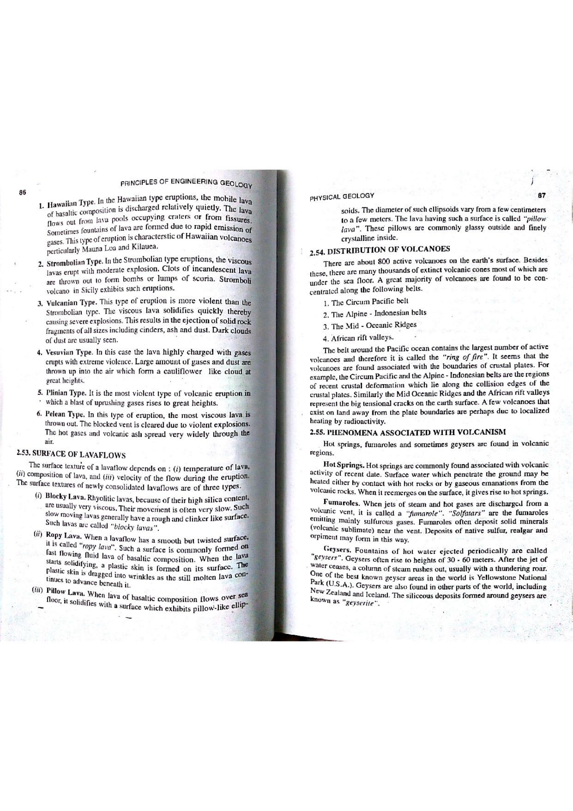

Volcanic eruptions are categorized globally according to the viscosity of their magmas, gas content (volatiles), eruption column height, and explosivity index. The Pelean Type of eruption—named after the catastrophic 1902 eruption of Mount Pelée on the Caribbean island of Martinique—represents one of the most violent, destructive volcanic phenomena on Earth.
High silica polymerization ($[\text{SiO}_4]^{4-}$ tetrahedral networks) traps expanding gas bubbles, raising overpressure $\Delta P$ until catastrophic brittle explosive fragmentation occurs.

| Eruption Type | Magma Type | Viscosity | Explosivity / Dynamics | Diagnostic Products |
|---|---|---|---|---|
| Hawaiian | Basaltic ($45-52\%\text{ SiO}_2$) | Very Low ($10^1-10^2\text{ Pa}\cdot\text{s}$) | Quiet, effusive, non-explosive | Pahoehoe & Aa flows, lava fountains, shield volcanoes |
| Strombolian | Basaltic to Andesitic | Low-Moderate | Rhythmic, mild bursts | Glowing scoria cinders, bombs, lapilli cones |
| Vulcanian | Andesitic to Dacitic | Moderate-High | Violent periodic explosions clearing plugs | Dense cauliflower ash clouds, breadcrust bombs |
| Pelean | Dacitic to Rhyolitic | Extremely High ($10^7-10^9\text{ Pa}\cdot\text{s}$) | Most violent activity; lateral blasts | Lava domes, spines, nuées ardentes (pyroclastic flows) |
| Plinian (Krakatoan) | Rhyolitic / Pumiceous | Maximum ($>10^9\text{ Pa}\cdot\text{s}$) | Cataclysmic vertical gas columns ($>30\text{ km}$) | Extensive pumice falls, calderas, global climatic impact |
| Eruption Style | Type Locality | Column Height (km) | Discharge Rate ($m^3/s$) | Primary Hazard |
|---|---|---|---|---|
| Hawaiian | Kilauea / Mauna Loa, Hawaii | $ < 0.5$ | $10^1 - 10^3$ | Lava flow inundation |
| Strombolian | Stromboli, Aeolian Islands, Italy | $0.5 - 2.0$ | $10^1 - 10^2$ | Ballistic projectiles, scoria fall |
| Vulcanian | Vulcano, Italy | $3 - 15$ | $10^3 - 10^5$ | Breadcrust bombs, widespread tephra fall |
| Pelean | Mount Pelée, Martinique (1902) | $5 - 20$ (Lateral Blasts) | $10^4 - 10^6$ | Lethal nuées ardentes (pyroclastic density currents) |
| Plinian | Vesuvius (79 AD) / Pinatubo (1991) | $20 - 50+$ | $10^6 - 10^9$ | Global aerosol cooling, pumice fall, caldera collapse |